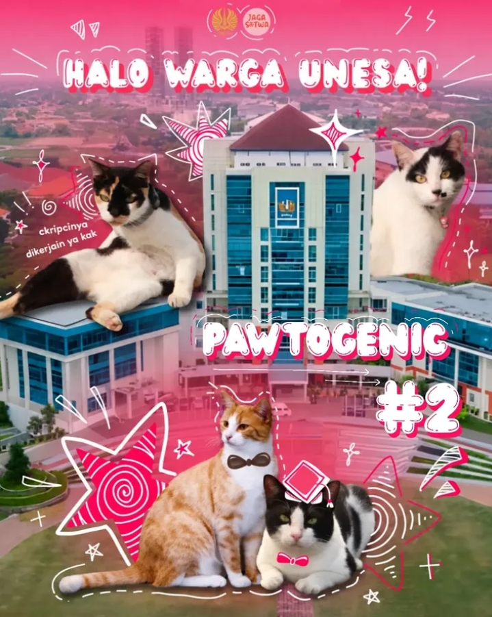

Edukasi & Kabar Satwa
Artikel Terbaru Jaga Satwa
Kampanye Edukasi
30 September 2026 • 3 menit baca
Baca Selengkapnya →
Stop Lepas Kalung Kucing UNESA: Ini Alasan Medis & Keselamatannya
Kalung kucing UNESA bukan hiasan biasa. Di dalamnya terdapat material reflektif dan identitas penanda sterilisasi resmi kampus...
 Komunitas
Komunitas
28 September 2026 • 4 menit baca
Baca Selengkapnya →
Perjalanan Jaga Satwa UNESA Menjaga Kesejahteraan Satwa Kampus
Bagaimana mahasiswa UNESA bertransformasi dari street feeding sederhana menuju sistem informasi terstruktur yang terintegrasi...

Kreativitas Mahasiswa
25 September 2026 • 3 menit baca
Baca Selengkapnya →
Pawtogenics: Kolaborasi Seni & Fotografi Mahasiswa untuk Satwa Kampus
Pameran karya visual mahasiswa Fakultas Bahasa dan Seni (FBS) yang mengabadikan keseharian kucing-kucing kampus UNESA...